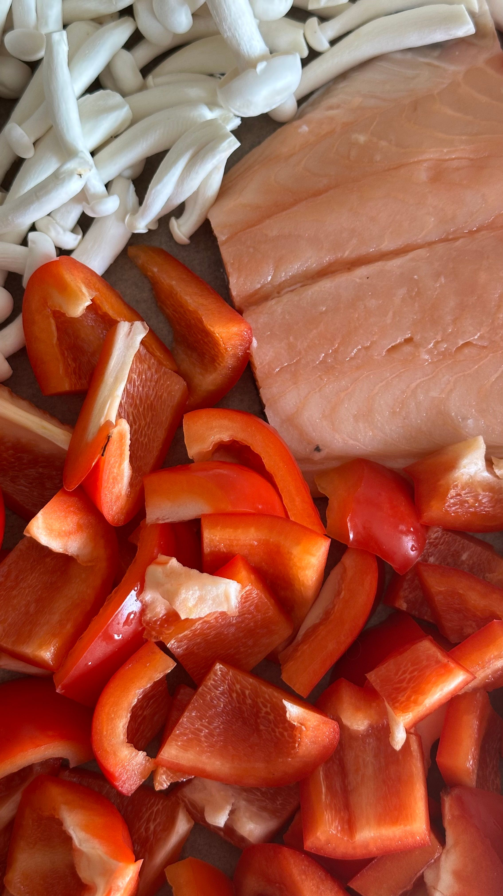
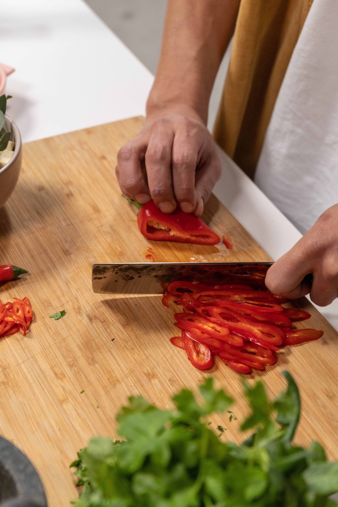
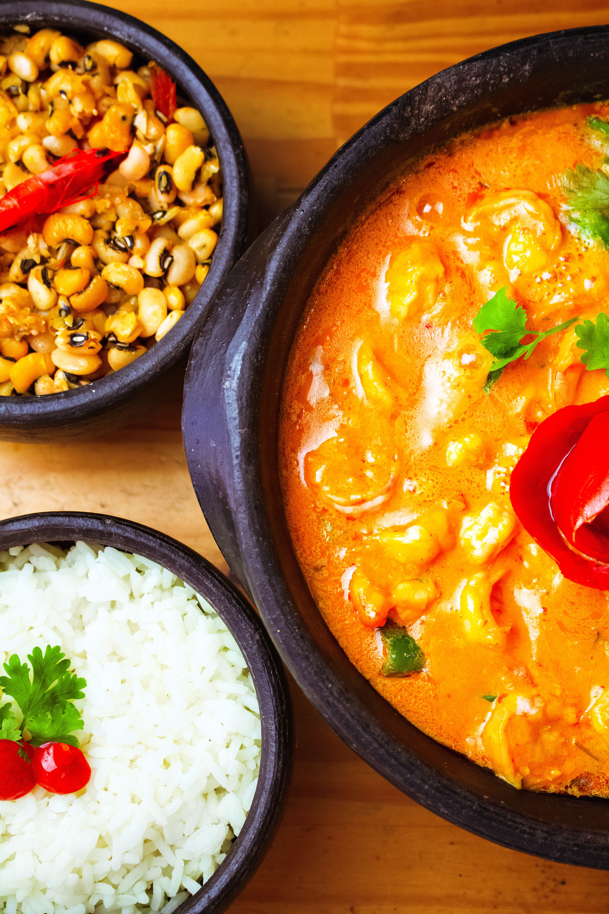

Moqueca bahiana
Descubre uno de los platos más tradicionales del nordeste de Brasil, reconocido por su combinación de pescado, leche de coco y aceite de dendé.

Historia y tradición
La moqueca bahiana es uno de los platos más tradicionales de la gastronomía de Bahía y un importante símbolo de la cultura afrobrasileña. Su historia refleja la combinación de influencias indígenas, africanas y portuguesas que contribuyeron a formar la identidad culinaria de la región. Preparada principalmente con pescado, verduras, leche de coco y aceite de dendé, representa una tradición transmitida de generación en generación.
Sus orígenes están relacionados con las técnicas culinarias indígenas. La palabra «moqueca» se asocia al término tupí «moquém», relacionado con la preparación de carnes y pescados mediante el calor. Con el tiempo, las influencias africanas aportaron ingredientes característicos como el aceite de dendé y la leche de coco, mientras que la cocina portuguesa también contribuyó a la evolución del plato.
Tradicionalmente, la moqueca bahiana se prepara en una olla de barro, que conserva el calor y permite que los ingredientes terminen de cocinarse lentamente. Suele acompañarse de arroz y pirão, elaborado con el caldo del guiso y harina de mandioca. Más que una receta, la moqueca representa la memoria, la diversidad cultural y el patrimonio gastronómico de Bahía.
Ingredientes principales
- 4 rodajas gruesas de pescado (cazón)
- 300 g de gambas (opcional)
- 250 ml de leche de coco
- 1 cebolla blanca pequeña
- 2 dientes de ajo
- 2 tomates pequeños y maduros
- ½ manojo de cilantro fresco
- 50 ml de aceite de oliva
- 50 ml de aceite de dendé (aceite de palma)
- 10 g de pimentón dulce o colorau
- 1 pimiento amarillo
- 1 pimiento verde
- 1 pimiento rojo
- 1 lima
- 1 chile rojo fresco (pimenta dedo-de-moça)
- 2 huevos cocidos
- Sal y pimienta negra al gusto
Cómo preparar la moqueca bahiana
- Calienta el aceite de oliva en una cazuela. Añade las gambas previamente sazonadas, dóralas durante al menos 2 minutos por cada lado y resérvalas.
- Añade un poco de aceite de dendé a la misma cazuela.
- Incorpora la cebolla, los tomates, los pimientos y el chile rojo sin semillas. Cocina hasta que las verduras estén bien doradas y resérvalas.
- Dora el ajo con el resto del aceite de dendé. Añade las rodajas de pescado previamente sazonadas con sal, pimienta negra y zumo de lima.
- Tritura en una batidora la leche de coco junto con las verduras doradas, hasta obtener una salsa homogénea.
- Vierte la salsa sobre el pescado en la cazuela.
- Ajusta la cantidad de sal y pimienta, tapa la cazuela y cocina durante aproximadamente 10 minutos, o hasta que el pescado esté bien cocinado.
- Incorpora las gambas previamente doradas y las hojas de cilantro fresco.
- Prueba la salsa y rectifica la sal si es necesario. Sirve la moqueca caliente.
La moqueca en imágenes



Vídeo de preparación
Descubre cómo se prepara la moqueca bahiana paso a paso.